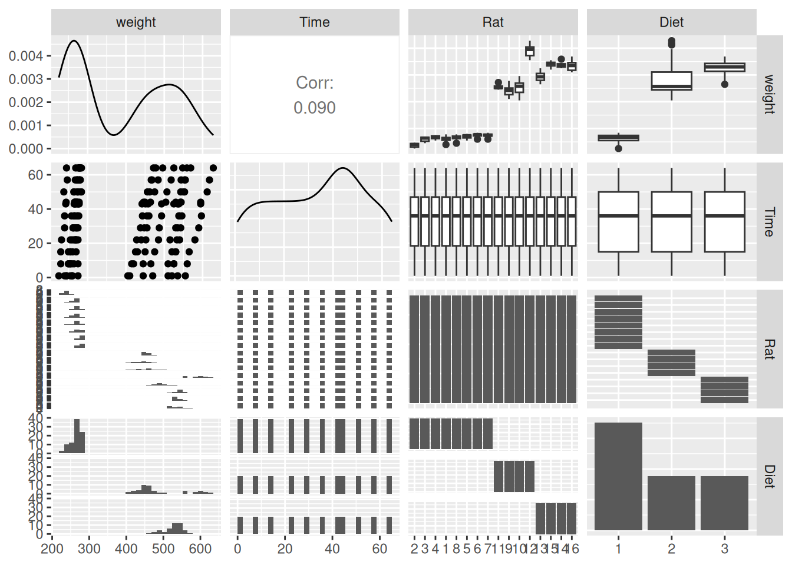
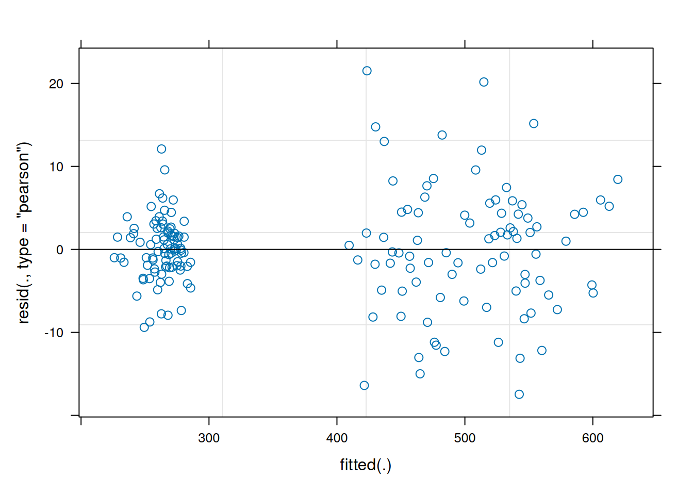
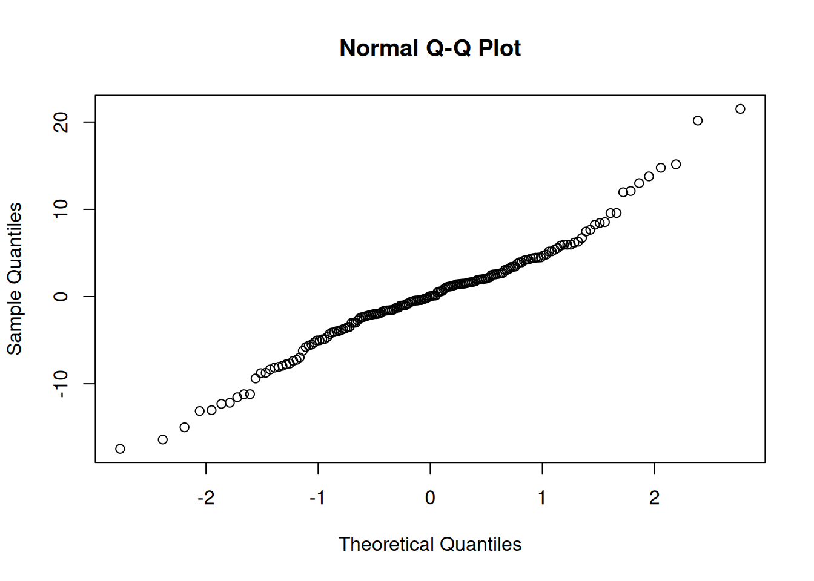
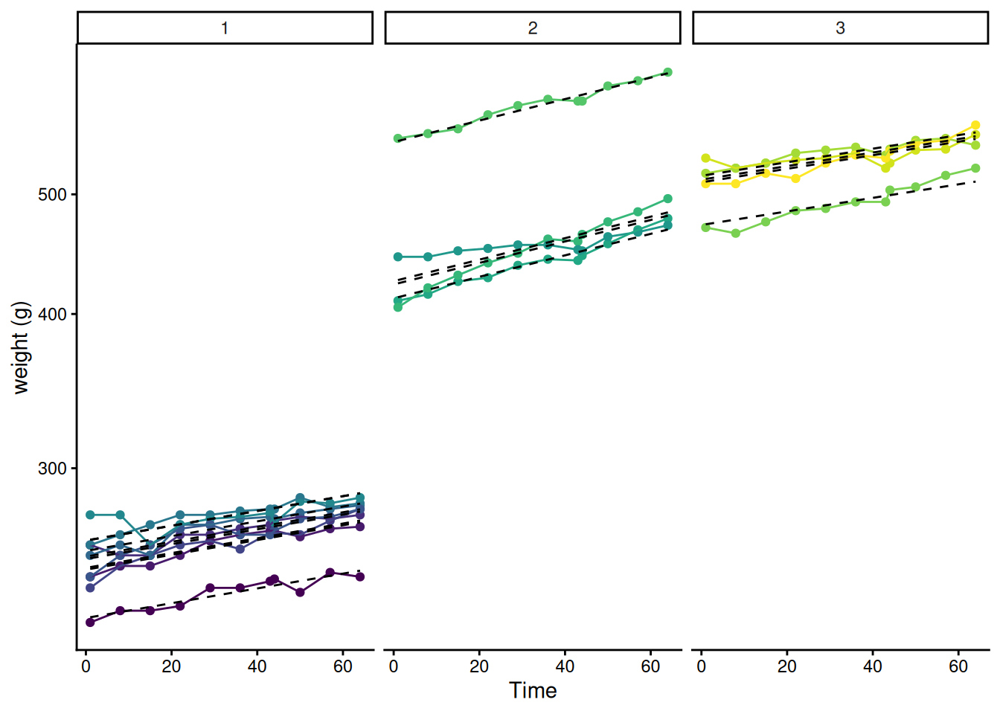
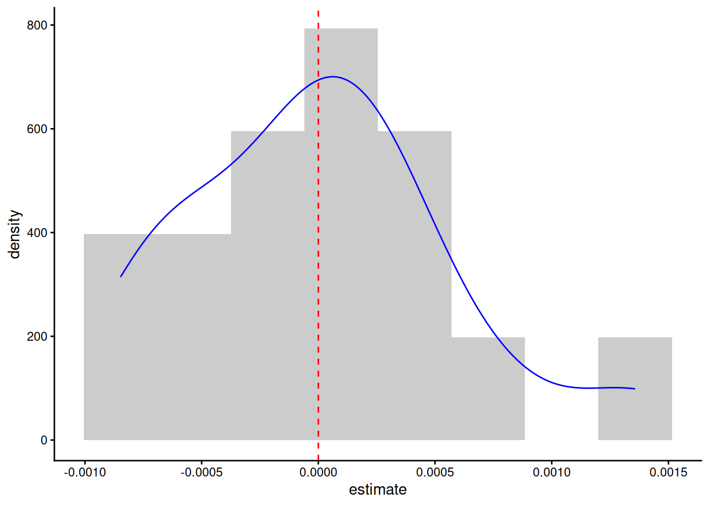
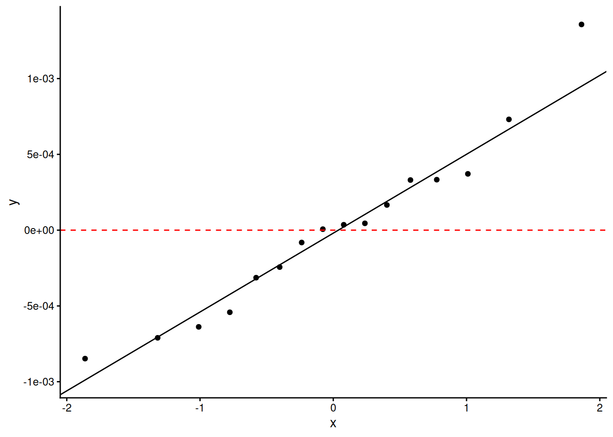
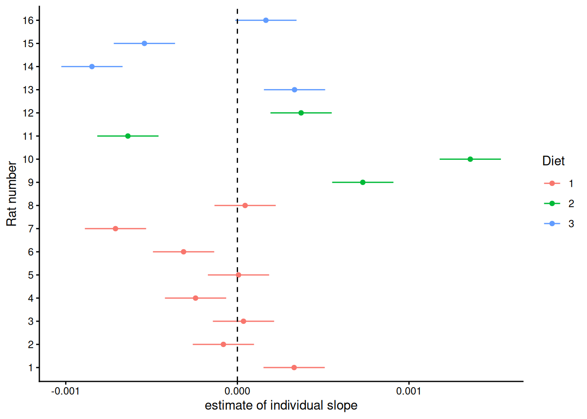

This worksheet will help practice fitting and using mixed effects models. It will use ideas previously introduced e.g. about linear modelling more generally. It will implement the approaches described in the videos using real data and R code.
This time we’ll focus on just one data set BodyWeight. It follows the weights of rats that have been and are being fed three different diets. This is a nature and scale of dataset that some of you might well generate during a research project. However, even if it’s not a kind of data you ever work with again, it will provide training in how to think critically about mixed effects models and what you need to do to implement them appropriately.
Part 1: Loading and visualising the BodyWeight data
BodyWeight is available in the nlme package
1.1 Load up the data
Start by loading the packages we’re going to need – do install any you don’t have
library(tidyverse)
── Attaching core tidyverse packages ──────────────────────── tidyverse 2.0.0 ──
✔ dplyr 1.2.1 ✔ readr 2.2.0
✔ forcats 1.0.1 ✔ stringr 1.6.0
✔ ggplot2 4.0.3 ✔ tibble 3.3.1
✔ lubridate 1.9.5 ✔ tidyr 1.3.2
✔ purrr 1.2.2
── Conflicts ────────────────────────────────────────── tidyverse_conflicts() ──
✖ dplyr::filter() masks stats::filter()
✖ dplyr::lag() masks stats::lag()
ℹ Use the conflicted package (<http://conflicted.r-lib.org/>) to force all conflicts to become errors
library(nlme)
Attaching package: 'nlme'
The following object is masked from 'package:dplyr':
collapse
library(lme4)
Loading required package: Matrix
Attaching package: 'Matrix'
The following objects are masked from 'package:tidyr':
expand, pack, unpack
Attaching package: 'lme4'
The following object is masked from 'package:nlme':
lmList
#also look at the help file to see what the columns each mean?BodyWeight
Notice that, while they’re numeric, both Rat and Diet are different types of factor - rat is ordered and diet isn’t. It’s not immediately clear why this is or what determines the rat ordering.
There are 16 rats and by default ggpairs doesn’t deal with any more than 15 factor levels. However, we can still ask it to work with more:
Warning: The `...` argument of `ggpais()` is deprecated as of GGally 2.3.0.
`stat_bin()` using `bins = 30`. Pick better value `binwidth`.
`stat_bin()` using `bins = 30`. Pick better value `binwidth`.
`stat_bin()` using `bins = 30`. Pick better value `binwidth`.
`stat_bin()` using `bins = 30`. Pick better value `binwidth`.

Q1.1.1 What does this suggest about how the Rat factor is ordered?
That ordering within the factor is what sets the order the rats appear along the axis in the plot. Does the numeric label mean something too?
It’s important to think about what our scientific questions are. If you had done the experiment yourself, you would be likely to have particular questions in mind. But whatever you have in mind, it’s also important to look at the structure of the data as if you were coming to it new and decide what scientific questions it might be possible to ask.
I’m going to say that the scientific question we want to answer here is:
Do rats on different diets have different growth rates?
Q1.1.2 What other possible questions might be appropriate for this data?
Q1.1.3 Decide which are response and explanatory variables and within the explanatory variables, decide which ones should be treated as fixed and which as random. Justify your choice.
1.2 Visualise the data
Q1.2.1 Make a plot showing all four variables in an appropriate way
suggestion: use one variable with each of x, y, colour and facet_wrap()
It looks like growth is pretty linear, so seems reasonable to fit a straight line through each rat’s curve
Part 2: Fitting a linear mixed effects model
2.1 Try fitting a reasonably complete model in one go
And then check its diagnostic plots
model1 <-lmer(weight ~ Time * Diet + (1|Rat), data = BodyWeight)plot(model1)

qqnorm(resid(model1))

Normality of residuals is ok-ish, but it does look like variance is higher in the higher weights of diets 2 and 3.
Could think of addressing this with a variance covariate - this isn’t straightforward with lmer - if wanted to do this, might be better to shift to a different tool (lme in the nlme package or brms). For here let’s stick with lmer.
While the data look linear enough, there might be a biological argument for log transforming weight - it seems reasonable that growth might be exponential and fitting a logged response variable is equivalent to fitting an exponential function: \(weight = a \times e^{(b \times time)}\) where \(b\) is the linear model’s slope with time and \(a\) can be derived from the linear model’s intercept.
2.2 Fit a model with a transformed response variable
The log transformation can be done within the model, like this:
model2 <-lmer(log(weight) ~ Time * Diet + (1|Rat), data = BodyWeight)
Q2.2.1 Check the diagnostic plots for this model – does it seem any better?
2.3 Plot out model predictions
If we want to use predict() to replot the data with the the model predictions, we need to work out how to get the model output (which uses log(weight)) to work with the raw data (which is not logged). Could be different ways to do this, but it’s often good to:
keep data on its original scale where that has meaningful units (as is the case here, where weight is in grams)
keep fits on their original scale, so if it was fitting a straight line, you plot a straight line
By using back transformation (exp() is the reverse of log()) and a modified y axis, it’s possible to do both things at once:
BodyWeight |>mutate(pred =predict(model2) |>exp()) |>ggplot(aes(x = Time, y = weight, colour = Rat))+geom_point() +geom_line()+geom_line(aes(y = pred, group = Rat), colour ="black",linetype =2)+scale_y_log10("weight (g)")+facet_wrap(~Diet)+theme_classic() +guides(colour ="none")

Part 3: Refining the model
3.1 Random slope model
The plot above doesn’t look bad but in some cases at least the slopes of the data within a diet look different from the slope of the model. Maybe some rats just happen to grow a bit faster or a bit slower. This model isn’t dealing with that - the random effect is just on the intercept, i.e. it accounts for the fact that some rats just happen to be a bit heavier or a bit lighter. We could allow the possibility that some rats just happen to grow faster or slower too. This is what’s called a random slope model – it just requires us to add the Time slope to the random effect:
model3 <-lmer(log(weight) ~ Time * Diet + (Time|Rat), data = BodyWeight)
Warning in checkConv(attr(opt, "derivs"), opt$par, ctrl = control$checkConv, : Model failed to converge with max|grad| = 0.00659413 (tol = 0.002, component 1)
See ?lme4::convergence and ?lme4::troubleshooting.
Except it doesn’t fit happily – it is only a warning, but failure to converge shouldn’t be ignored. This kind of issue is often a sign that the random effects are just a bit too complicated, given the data. However, whether the model succeeds in converging on a good set of parameters is complicated and depends on exactly how it’s done behind the scenes by the optimizer. There is a range of different optimizers out there that take different approaches and could be used. Take a look at ?lmerControl to see options for optimizers and other things. We’ll try refitting using the first alternative optimizer offered there. To give it the best chance, we’ll also put in a big number for how many iterations it can use:
model3a <-lmer(log(weight) ~ Time * Diet + (Time|Rat), data = BodyWeight, control =lmerControl(optimizer ="Nelder_Mead", optCtrl =list(maxfun =1e7)))
No warning this time!
Q3.1.1 Compare the random slope model with the random intercept model by likelihood ratio test and check its diagnostic plots – which model is the one to go with?
Q3.1.2 Plot the random slope model with the data - can you spot the difference?
3.2 Try refining the model further
There’s a hint in the data that sometimes multiple rats weigh in a bit low or a bit high (e.g. see the dip in many rats soon after day 40). Perhaps on some days the balance used for weighing is just a bit warmer or the time since feeding is a bit different different or something else that adds random variation that applies to all the rats at the same time. That could be formalised in the model as a random effect of time point:
model4 <-lmer(log(weight) ~ Time * Diet + (Time|Rat) + (1|Time), data = BodyWeight)
Notice that this fits ok without changing the optimizer – perhaps these random effects aren’t over-complicated after all.
Q3.2.1 Test the significance of adding in the random effect of time point. What does this suggest?
3.3 Look at the finalised model
This model we’ve ended up with is quite complex – the explanatory variable Time appears three times in the formula – in fact it could appear four times! – Time * Diet is really just a shorthand for main effects (Time and Diet ) plus their interaction effect (Time:Diet). So the full formula could be written:
Each of these occurrences of Time represents something different:
Time on its own is for fitting the slope of weight over time, a fixed effect.
Time:Diet is for fitting how the slope of weight over time changes with diet, again a fixed effect – this is the one our scientific question is about!
Time in (Time|Rat) is the random slope term, allowing individual rats to have different slopes, varying around the average slope over time for their particular diet. Note that, while we could tell it not to, this will also fit a random effect of Rat on the intercept (some rats are just heavier or lighter).
(1|Time) is the direct random effect of time point - Time here is not treated as a continuous numeric variable, it’s just treated as a category that links together all the measurements at a particular time. It’s a random effect on 1 the intercept, meaning that some time points are just a bit higher or lower.
Check this in the summary
summary(model4)
Linear mixed model fit by REML ['lmerMod']
Formula: log(weight) ~ Time * Diet + (Time | Rat) + (1 | Time)
Data: BodyWeight
REML criterion at convergence: -871.2
Scaled residuals:
Min 1Q Median 3Q Max
-3.1919 -0.5069 0.0922 0.5936 2.4190
Random effects:
Groups Name Variance Std.Dev. Corr
Rat (Intercept) 6.926e-03 0.0832207
Time 3.084e-07 0.0005553 -0.43
Time (Intercept) 1.204e-05 0.0034692
Residual 1.359e-04 0.0116576
Number of obs: 176, groups: Rat, 16; Time, 11
Fixed effects:
Estimate Std. Error t value
(Intercept) 5.5272279 0.0296006 186.727
Time 0.0013792 0.0002134 6.464
Diet2 0.5808240 0.0511424 11.357
Diet3 0.6942217 0.0511424 13.574
Time:Diet2 0.0006246 0.0003576 1.747
Time:Diet3 -0.0001159 0.0003576 -0.324
Correlation of Fixed Effects:
(Intr) Time Diet2 Diet3 Tm:Dt2
Time -0.434
Diet2 -0.576 0.243
Diet3 -0.576 0.243 0.333
Time:Diet2 0.250 -0.559 -0.434 -0.145
Time:Diet3 0.250 -0.559 -0.145 -0.434 0.333
Q3.3.1 Look through the model summary and identify where each of these four occurrences of Time appears - associate a parameter value with each one
3.4 Ask the scientific question
Fit a reduced model without a different growth rate (remembering that Time * Diet is shorthand for Time + Diet + Time:Diet and we only want to remove one effect at a time):
model5 <-lmer(log(weight) ~ Time + Diet + (Time|Rat) + (1|Time), data = BodyWeight, control =lmerControl(optimizer ="Nelder_Mead", optCtrl =list(maxfun =1e7)))
Q3.4.1 Compare the reduced model the full model to test the scientific question we started with – what’s the answer?
And plot out the best model with the data.
Part 4: Active reflection
– The random effects, particularly the random slope among rats has a BIG effect on the question of whether the model sees the difference in growth rate among diets as significant.
Q4.1 Try taking out the random slope from model4 before comparing it with a reduced model (without the interaction effect of different growth rates among diets)
– the conclusion is very different, even though model2 without the random slope didn’t seem too bad a model.
– So let’s look more closely at those random effects of rat on growth rate in the final model. Generic functions, particularly tidy in the broom and broom.mixed packages are good for extracting such information from models. What we want/expect is for the random effect to look like a normal distribution centred on zero:
First extract and plot the predicted slope effects from the model
slope_effect <-tidy(model5, effects ="ran_vals") |>filter(group =="Rat", term =="Time")#plot out the distributionslope_effect |>ggplot(aes(x = estimate, after_stat(density)))+geom_histogram(bins =8, fill ="grey80")+geom_density(colour ="blue")+geom_vline(xintercept =0, colour ="red", linetype =2)+theme_classic()

#use a quantile-quantile plot to get a clearer view of the normalityslope_effect |>ggplot(aes(sample = estimate))+geom_qq() +geom_qq_line()+geom_hline(yintercept =0, colour ="red", linetype =2)+theme_classic()

It’s not brilliant, but I’ve seen much worse.
– Are there any suspicious things going on in terms of different treatments appearing in different parts of this distribution? To check that, we need to match up the rats in the histogram above to their diets:
#all rats have a first time point, so quick to just filter down to one time point and join to the random effects Diets_And_slopes <- BodyWeight |>as_tibble() |>filter(Time ==1) |>left_join(slope_effect, by =c("Rat"="level"))Diets_And_slopes |>ggplot(aes(x = estimate, y = Rat |>as.numeric() |>factor(), colour = Diet))+geom_point()+geom_linerange(aes(xmin = estimate - std.error, xmax = estimate + std.error))+geom_vline(xintercept =0, linetype =2)+scale_y_discrete("Rat number") +scale_x_continuous("estimate of individual slope") +theme_classic()

It’s not clear that all three diets’ distributions are truly centred in the same place (at zero) – the two highest slope estimates are for diet 2, plus, diet 1 has all the smallest positive residuals. We can see how, without this, we could think that diet 2 gives a systematically higher growth rate than diet 1. However, it doesn’t look like this distribution of random effects among treatments is unreasonable – all three diets have rats with both positive and negative random slopes.
– So do we believe that there is no effect of diet on growth rate? It looks like we simply don’t have the evidence to tell. To try and give an intuitive explanation – it really does look like different rats on the same diet can just happen to grow at different rates (look at the data plot for diet 2). If that’s true and we’ve only got 4 rats on diet 2 and 4 rats on diet 3, there’s a fair probability that we might happen to to get a couple that grow noticeably faster or slower than average, even if there’s nothing going on, giving a pattern like this. But it’s equally possible that there is something going on – a difference in growth rates among diets – it’s just that one or two rats happened not to show it so strongly, so the difference didn’t reach statistical significance.
– It’s also important to remember that we’re looking at exponential growth rate – our final model (model5) is fitting the same exponential rate across diets, which means that in terms of grams per day, bigger rats (on diets 2 and 3) are growing quicker. It wasn’t clear whether our scientific question was about whether growth rate in grams or in % growth per day was what we cared about.
Q4.2 To convince yourself that the model predicts a greater grams per day increase on Diet 2 than Diet 1 work out how many grams a typical rat on these diets will gain from day 0 to day 60
(clue: you can get at just the fixed effects of the model easily by using fixef(model5))
– So what do we do about our question? It’s very clear that, even if the rats on the different diets have exponential growth rates that are indistinguishable by this experiment, something about the diets has led them to have very different weights at the start of the experiment. So we could try doing the experiment again at an earlier life stage, or if we really care about growth rate differences at this life stage, we will need more rats on diets 2 and 3.
– But we may not be able to do another experiment. We could/should instead/also ask whether we had the right question in the first place. If different assumptions about the model we fit can make such a big difference to the conclusion, perhaps we shouldn’t be thinking of dichotomous hypothesis testing at all. What else could we do? Maybe it would be better to ask a parameterisation question: If there is a systematic difference in growth rate between diets (where this experiment doesn’t give us sufficient statistical support to say that there is)
Q4.3 what is our best estimate (and confidence interval) for growth rate on diet 1 and the difference in growth rate from diet 1 to diet 2 or 3? Comment on these values. This information was there in model4.
clue: while you can pull out the estimates from the model summary, try using tidy() and confint()
– This information would be useful if, for example, what we really wanted was to find an alternative to diet 1 on which rats of this age grow quicker, but we have to decide between diets 2 and 3 on the basis of this data alone (rat experiments take a long time and are expensive!). The modelling is clear that, even though this experiment wasn’t able to say for definite that the diets had any effect at all, the best bet would be diet 2, with the best estimate being an increase in exponential growth rate of nearly 50%. Diet 3 on the other hand we can be fairly sure wouldn’t give an increase that big (the upper confidence interval is lower than the expected value for Diet 2).
– A bit more terminology: Because we looked at fixed effects of both a continuous variable (Time) and a categorical variable (Diet) and their interaction, this could be described as a mixed effects ANCOVA. We had two separate variables with random effects - Rat and Time. We had data for the same rat at different times and we had data at the same time for different rats. That means that these are what’s known as crossed random effects. The alternative to crossed random effects are nested random effects, for example if (as would be reasonable) these 16 rats were housed in 8 cages, this would cause pseudoreplication. We would want to account for this by including a random effect of cage. However, it’s likely that a rat only ever lives in one cage, but one cage has more than one rat, i.e. rat is nested within cage.
– lmer will deal with nesting versus crossing in random effects by itself, as long as you don’t repeat the labelling of the nested level, e.g. if you always called the two rats in a cage A and B it wouldn’t know that cage1_A was a different rat to cage2_A unless your Rat column tells it. So with nested effects it’s always best to use the nested levels pasted together for the nested level.
– The question of how these rats were housed is an important one – and if you are just presented with data like this it’s one you should ask. Diet treatments are often implemented at the level of a cage, where a whole cage got the same food. If there were 16 cages, each containing multiple rats (ethically rats need company) and just one particular rat was measured from each cage each day, that’s fine, the analysis is good. However, if some of the rats were in the same cages, that makes those rats in one cage pseudoreplicates because they’re linked - if that cage is warmer or colder, lighter or darker or anything else, all the rats in that cage will be affected together and eating droppings means that the microbiome will be more homogenous within cages than between them. If this is true, you can still analyse the data, but need to make sure that the model accounts for cage, which would naturally be a random effect.
Q4.4 we don’t know about the housing of the rats in this dataset – if you have a bit of spare time (not fundamental to this worksheet!), imagine that rats 1-2 were in cage 1, rats 3-4 in cage 2, 5-6 in cage 3 etc. and see how much variation that says there is among the cages and whether it affects the conclusions.